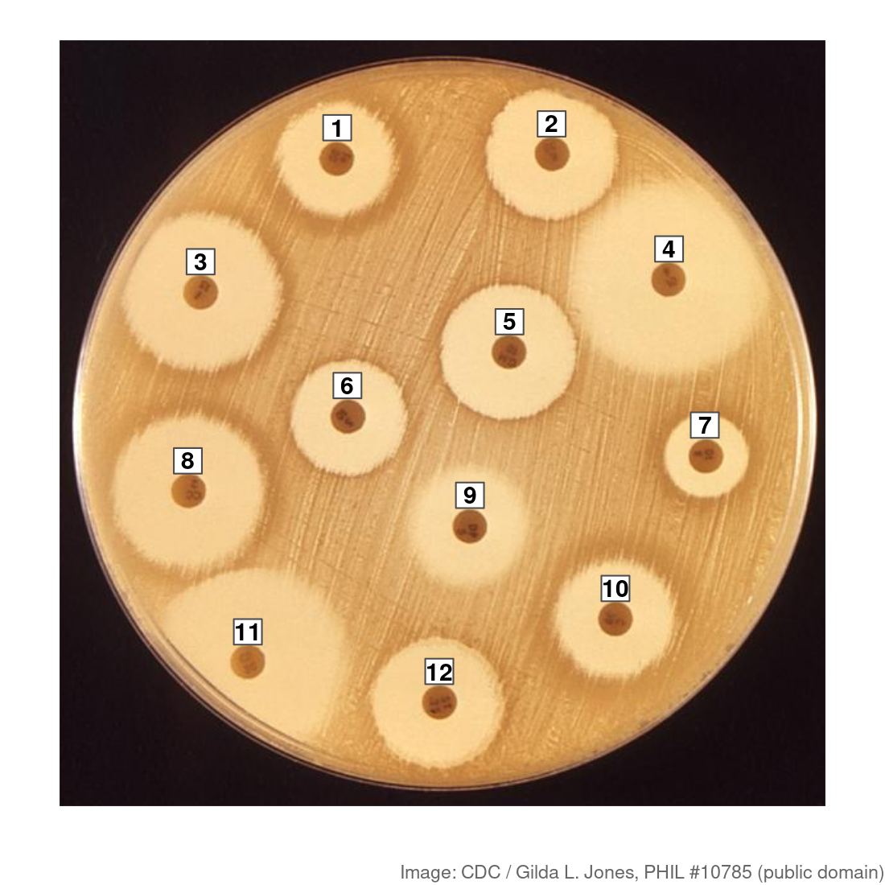
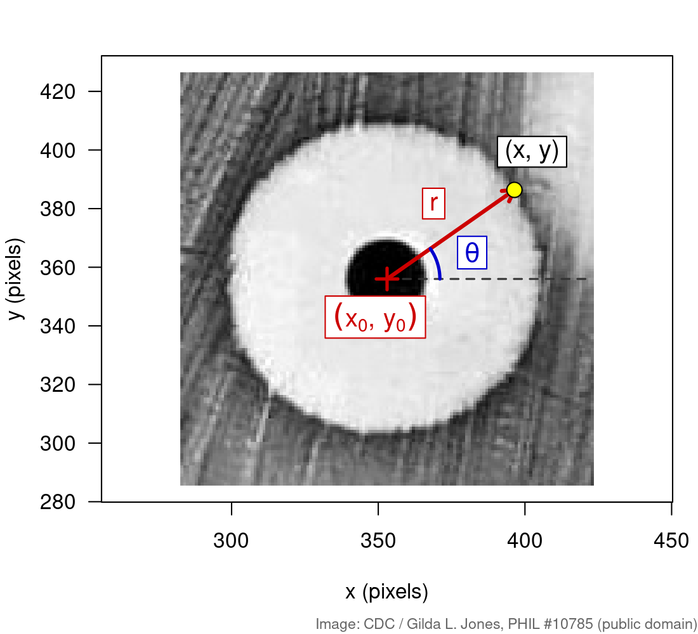
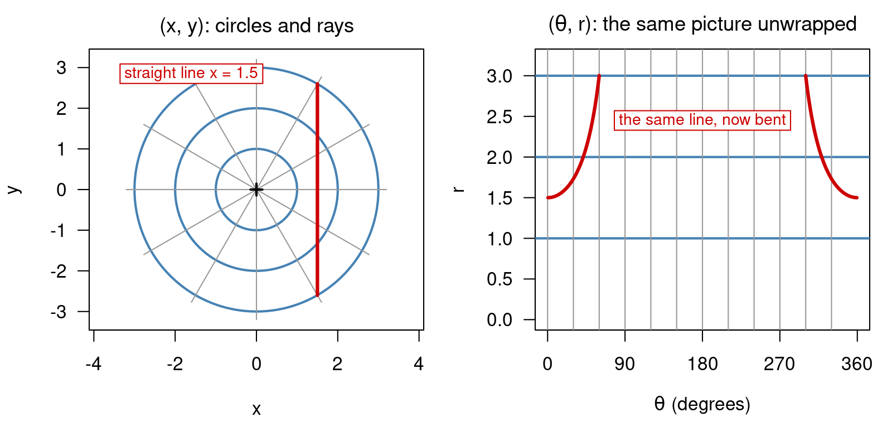
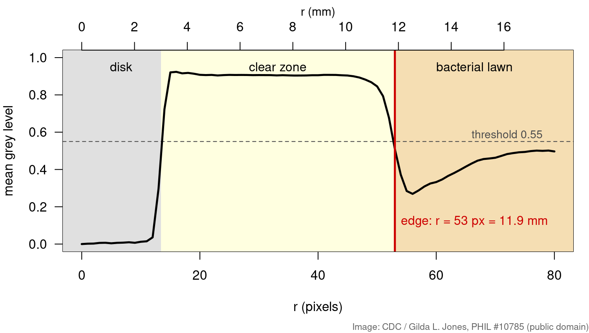
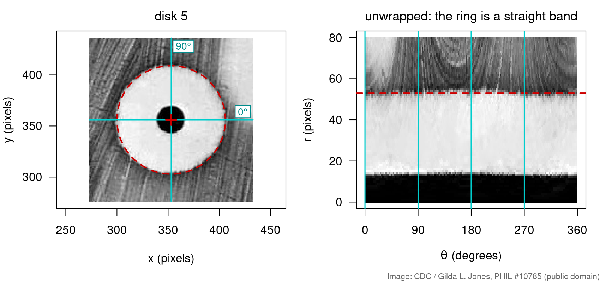
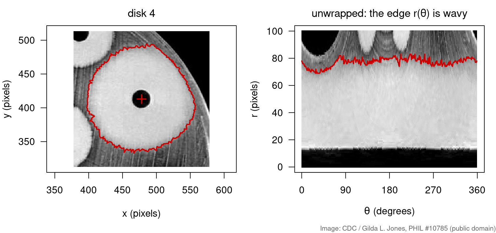

Many things in biology grow or spread outwards from a centre: a drop of antibiotic, a colony, a tumour spheroid, a cell nucleus. For those, \((x, y)\) is the wrong way to describe a position. Distance from the centre and direction fit much better.
Polar coordinates\((r, \theta)\): how far from the centre, and in which direction.
A very useful transformation, but a nonlinear one: unlike rotation or shear, it is not a matrix.
Unwrapping an image around a centre turns rings into straight lines.
Biology: measuring the zone of inhibition of an antibiotic, from a photo of a real plate.
You need the jpeg package from Transforming images with matrices.
Biology: the disk diffusion test

Is this bacterium resistant to an antibiotic? The disk diffusion (Kirby–Bauer) test answers it in one plate:
Spread bacteria evenly on agar; place 6 mm paper disks, each soaked in a different antibiotic.
The drug diffuses outwards. Where it is strong enough, nothing grows: a clear zone of inhibition.
Next day, measure each zone’s diameter in mm. A lab compares it with a breakpoint table (EUCAST or CLSI) for that drug and species: susceptible or resistant.
Diffusion spreads equally in all directions, so the zones are (nearly) circles. Circles are easy in polar coordinates.
dx <-3; dy <-4sqrt(dx^2+ dy^2) # r = 5atan2(dy, dx) *180/ pi # theta = 53.1 degrees

Image: CDC / Gilda L. Jones, PHIL #10785, public domain.
Polar coordinates are not a matrix

Every transformation in Transforming images with matrices kept straight lines straight: that is what a matrix does.
Polar coordinates turn circles into straight lines and straight lines into curves. No 2 × 2 matrix can do that.
Check with one point: doubling \((1, 1)\) doubles \(r\) but keeps\(\theta\). A linear map would double both outputs.
Every pixel gets a distance
Load the plate as in Transforming images with matrices, then compute \(r\) for every pixel around disk 5:
img <- jpeg::readJPEG("plate.jpg") # 600 x 600 grey levels, 0..1img <-t(img[nrow(img):1, ]) # flip so up is up; now img[x, y]xy <-t(expand.grid(1:nrow(img), 1:ncol(img))) # 2 x N pixel coordinatesx0 <-353; y0 <-356# centre of disk 5r <-sqrt((xy[1, ] - x0)^2+ (xy[2, ] - y0)^2) # one distance per pixelnear <- r <=80plot(r[near], img[near], pch =16, cex =0.3) # grey level against distance
Group the pixels by distance and average: one number per radius.
prof <-tapply(img[near], round(r[near]), mean) # mean grey level at r = 0, 1, ..., 80rr <-as.numeric(names(prof))edge <-min(rr[rr >=16& prof <0.55]) # first radius past the disk that is darkedge # 53 pixels2* edge / (26.8/6) # diameter: 24 mm (a 6 mm disk is 26.8 px)

Image: CDC / Gilda L. Jones, PHIL #10785, public domain.
Unwrapping: work backwards from (r, θ)
To turn the ring into a picture in \((\theta, r)\), go backwards: for each \((r, \theta)\) on a grid, compute \(x, y\) and look up the nearest pixel.
unwrap <-function(x0, y0, rmax =80) { r <-0:rmax theta <- (0:359) * pi /180# one column per degree x <- x0 +outer(r, cos(theta)) # (rmax + 1) x 360 grid of positions y <- y0 +outer(r, sin(theta))matrix(img[cbind(round(as.vector(x)), round(as.vector(y)))], nrow =length(r))}u <-unwrap(353, 356) # rows = r, columns = theta

Image: CDC / Gilda L. Jones, PHIL #10785, public domain.
Try it: move the centre
A zone that is not round
Disk 4 sits near the plate edge, between two other zones. Find the edge separately for every angle, one column of the strip at a time:
u4 <-unwrap(478, 413, rmax =100)edge_at <-apply(u4, 2, function(v) min(which(0:100>=16& v <0.55)) -1) # row 1 is r = 0range(edge_at) # 69 to 83 pixels: not a circle

The edge \(r(\theta)\) is a curve in the strip, not a line. Averaging over \(\theta\) would hide that.
Lab rule of thumb: an irregular or merging zone is unreliable; repeat the test or read the undisturbed side.
Image: CDC / Gilda L. Jones, PHIL #10785, public domain.
Measuring the whole plate
The same three lines for every disk: centre → unwrap → profile → edge.